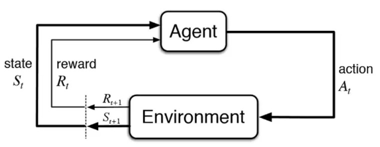
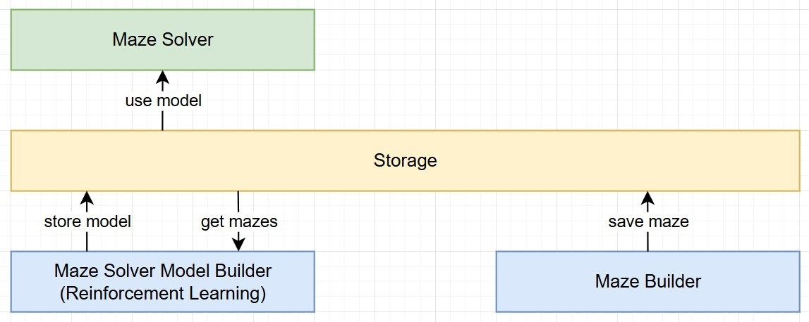

Project 5: Q-Table Reinforcement Learning Maze Solver
Introduction
Background
Reinforcement Learning (RL) is a powerful machine learning paradigm that enables agents to learn optimal behaviors through interactions with their environment. This project focuses on applying RL principles to solve mazes, a classic problem in AI research. The maze-solving agent navigates through various maze structures, learning strategies to reach a defined goal state from a starting point while avoiding obstacles. The underlying methodology leverages Q-Learning, a model-free RL algorithm, to iteratively improve the agent's decision-making capabilities. By rewarding progress towards the goal and penalizing inefficient or incorrect moves, the system adapts to complex scenarios and achieves efficient navigation. This approach showcases the potential of RL in solving structured problems and demonstrates its scalability to diverse challenges.
For this project we will use Q-Table Reinforcement Learning. Q-learning is a type of reinforcement learning where an agent learns to make decisions by updating a Q-value function essentially a lookup table of state-action pairs that estimates future rewards. Using the Bellman equation, the agent iteratively refines its Q-values through trial and error, gradually uncovering the best actions to maximize long-term rewards, even without a model of the environment. It’s like learning to ride a bike by falling off a few times while each tumble makes you a bit wiser.
Scope
This project aims at building a reinforcement learning application where an agent learns to navigate through mazes. The system will be designed to generalize maze solving across various maze sizes and complexities. The project emphasizes building, training, and testing an AI-based maze solver using Python.
Note: This project aims to showcase the potential of reinforcement learning in problem-solving while creating a generalized tool for maze navigation it will not include a graphical user interface (GUI).
Deliverables (High-Level Scope)
- The Maze Builder which allows users to create customizable mazes with adjustable parameters such as size and complexity.
- The Maze Solver Model Builder which is a reinforcement learning layer that trains a model to solve mazes by learning optimal navigation strategies getting rewarded for solving the maze.
- The Maze Solver which is the agent that and includes a visualization tool to demonstrate how the it solves new mazes using the trained model.
The solution will be built using Python. Q-Tables. A Q-table is a fundamental component in reinforcement learning, specifically in Q-learning, a model-free reinforcement learning algorithm. Further Matplotlib. All mazes will be built using mazelib library which offers maze creation capabilities.
Out of Scope
- Creating a GUI for the maze builder or solver (initially CLI-based).
- Advanced features like multi-agent training or 3D environments.
- Manual user intervention during the agent’s training process.
High-Level Design
